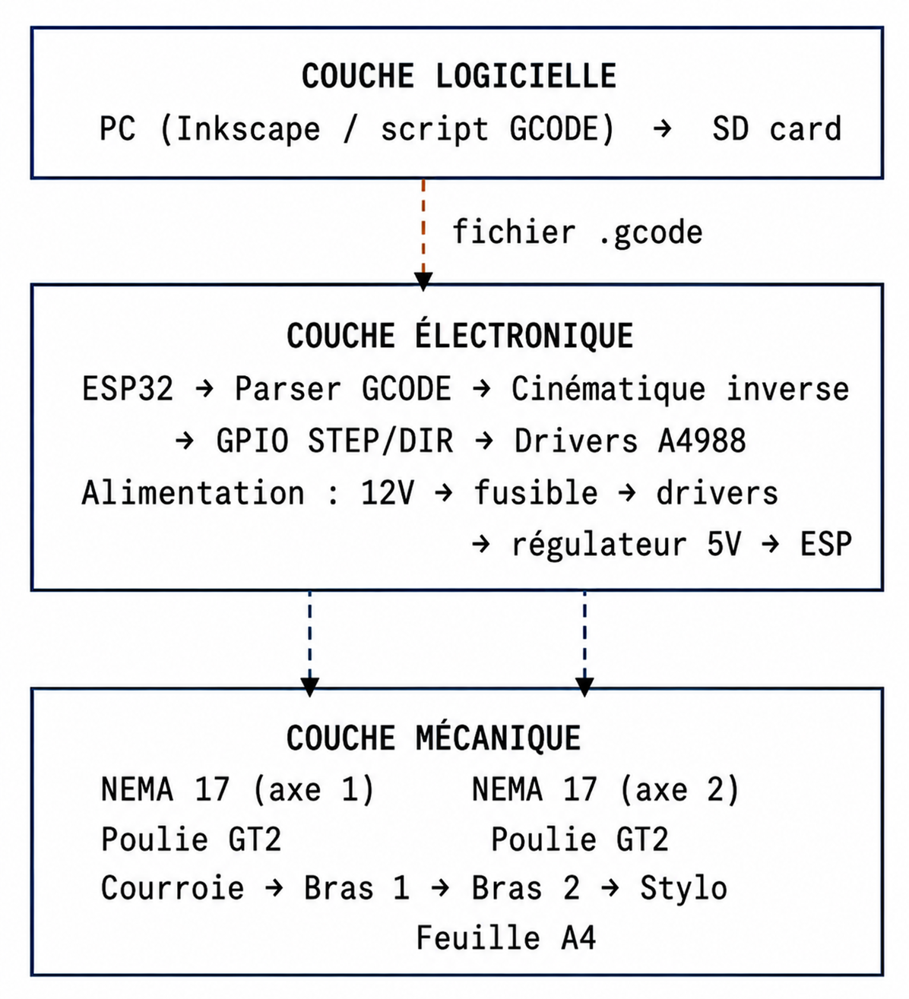

code-arduino.zip
Code firmware + configuration config.yaml à téléverser sur l'ESP32.
Manuel détaillé du DrawBot A4, de la fabrication des pièces jusqu’aux tests de dessin sur feuille A4.
Le DrawBot A4 est un robot de dessin à bras articulé conçu comme un projet de mécatronique appliquée, documenté pour être compris, assemblé et amélioré dans un cadre makerspace ou académique.
Le système a été développé autour d’une structure mécanique imprimée en 3D, d’un support feuille découpé au laser, d’une carte PCB custom et d’un pilotage par ESP32. L’objectif du projet est de convertir un visuel en trajectoires de dessin puis de les exécuter sur une feuille A4 avec une machine compacte, stable et pédagogique.

Le DrawBot A4 repose sur deux bras articulés entraînés par moteurs pas à pas. Contrairement à une machine cartésienne, les trajectoires sont obtenues par la combinaison d’angles mécaniques et d’une coordination logicielle adaptée.
La structure s’appuie sur des supports imprimés, des roulements et des courroies GT2. Le robot maintient une feuille A4 sur un support dédié avec clapet et charnières. Côté électronique, un ESP32 piloté avec FluidNC supervise la lecture des commandes et la gestion des mouvements.

Le projet combine de l’électronique embarquée, des pièces mécaniques imprimées et des éléments de fabrication numérique disponibles dans un makerspace.
| Élément | Rôle | Quantité |
|---|---|---|
| ESP32 (format Uno) | Contrôle machine, firmware FluidNC — alimenté en 5 V | 1 |
| Drivers A4988 | Commande des moteurs pas à pas — logique 5 V / puissance 12 V | 2 |
| Moteurs pas à pas | Entraînement des articulations — alimentation 12 V | 2 |
| Condensateurs 100uF | Filtrage alimentation | 2 |
| Résistances 10K | Maintien d’états logiques | 2 |
| Résistances 4.7K | Tirage / adaptation de lignes | 2 |
| Régulateur 5 V | Abaissement 12 V → 5 V pour l'ESP32 | 1 |
| Slot micro SD | Support de fichiers | 1 |
| Fusible 3 A | Protection de l'entrée 12 V | 1 |
| Courroies GT2 | Transmission mécanique | 2 |
| Roulements | Réduction des frottements | Plusieurs |
| Pièces imprimées 3D | Bras, supports, interfaces mécaniques | Ensemble |
| Découpe laser | Support feuille, clapet, éléments plats | Ensemble |
La fabrication repose sur deux procédés complémentaires : l’impression 3D pour les pièces volumétriques et la découpe laser pour les éléments plans.

Le tutoriel suivant couvre l’ensemble de la chaîne projet, depuis la récupération des fichiers jusqu’aux essais de dessin. Chaque étape inclut l’objectif, un conseil pratique et l’erreur fréquente à éviter.
Récupérer les archives utiles : code, STL, exports Onshape, KiCad et documentation.
Préparer l’environnement de base pour les besoins de programmation et de vérification.
Utiliser VSCode pour centraliser le développement et la configuration.
Ajouter l’extension PlatformIO dans VSCode pour la gestion de projet embarqué.
Programmer l’ESP32 avec FluidNC afin de disposer d’un firmware capable de lire la configuration et d’exécuter les mouvements.
config.yamlCharger la configuration machine correspondant au DrawBot A4.
Préparer les dépendances logicielles côté environnement de développement.
Lancer l’impression 3D des bras, supports moteurs, support stylo et pièces mécaniques associées.
Fabriquer le support feuille, le clapet et les pièces plates de maintien.
Monter la base, les supports moteurs et les bras articulés.
Positionner les roulements dans les logements prévus pour garantir un mouvement fluide.
Passer les courroies dans les poulies et régler leur tension.
Nettoyer la carte, vérifier les composants et organiser la séquence d’implantation.
Réaliser la soudure CMS et l’assemblage des connecteurs, pins et composants de puissance.
Positionner correctement les drivers sur la carte et vérifier leur orientation.
Fixer ou connecter l’ESP32 sur la carte selon l’implantation prévue.
Effectuer les premiers essais de rotation pour valider le câblage et le sens des mouvements.
Ajuster l’origine, la tension des courroies et les paramètres nécessaires à la précision du tracé.
Envoyer un fichier de test pour valider l’ensemble du pipeline jusqu’au résultat sur feuille.

La chaîne logicielle du DrawBot A4 a été mise en place par Damien et repose exclusivement sur les outils réels du projet : ESP32 (format Uno), VSCode, PlatformIO, FluidNC, fichier config.yaml, p5.js et imagetracer.js.
Le pipeline fonctionnel mis en place par Damien est le suivant : image → SVG avec imagetracer.js → GCODE → communication série → FluidNC → moteurs. Ce flux permet de passer d’un contenu graphique à un tracé physique sans inventer d’outils extérieurs à la stack du projet.

La calibration est indispensable sur une machine à bras articulé. Elle permet d’ajuster la cohérence entre le modèle mécanique, le comportement réel des moteurs et la position du stylo sur la feuille.
Définir une position de référence stable pour les bras avant toute série de tests.
Ajuster la transmission afin d’éviter à la fois le flottement et l’excès de contrainte mécanique.
Vérifier le comportement des moteurs à vide puis sous charge légère avec le stylo monté.
Tracer des formes simples, mesurer les écarts puis corriger progressivement les paramètres.
Les durées ci-dessous sont indicatives et dépendent fortement de la disponibilité des machines et de l’état des prototypes initiaux.
Le projet a rencontré plusieurs difficultés techniques classiques d’un système mécatronique développé en équipe :
Les jeux dans la transmission et l’alignement des éléments mécaniques ont demandé plusieurs ajustements.
La tension correcte des GT2 a été déterminée par essais successifs pour éviter le flottement et la surcontrainte.
La mise au point du PCB, la soudure et le contrôle des connexions ont demandé de la rigueur avant toute mise sous tension.
La calibration du bras articulé a nécessité plusieurs essais de dessin pour converger vers un résultat satisfaisant.
Code firmware + configuration config.yaml à téléverser sur l'ESP32.
Fichiers KiCad complets de la carte électronique du DrawBot A4.
TéléchargerLien direct vers l'assemblage Onshape (toutes les pièces visibles et téléchargeables).
Ouvrir OnshapeCode source complet, historique des versions et documentation technique du projet.
Ouvrir GitHubVue d’ensemble après assemblage et intégration complète.

Support de lecture supplémentaire pour comprendre l’implantation générale.

Vue d’une pièce centrale du système mécanique.
Démonstration du DrawBot A4 pendant une séquence de dessin.
Vue de l’assemblage et des opérations de montage du projet.
Vidéo de présentation (≈ 1 min)